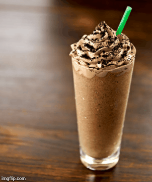
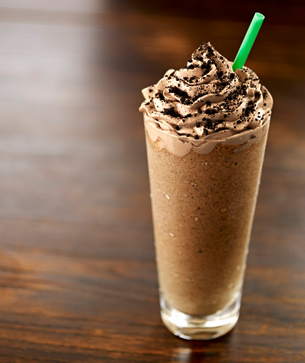
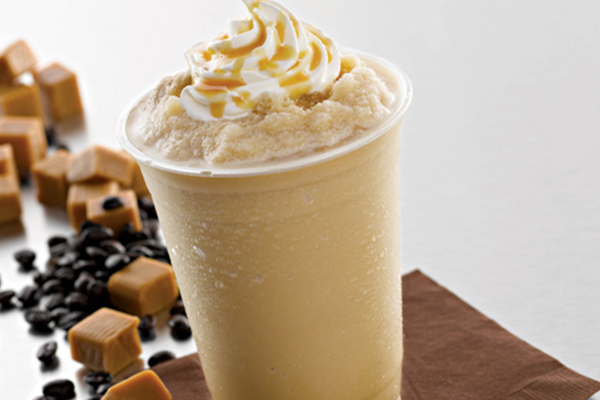
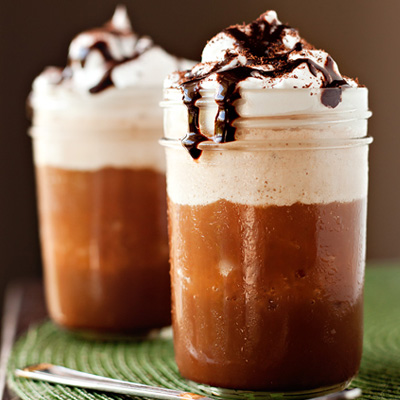
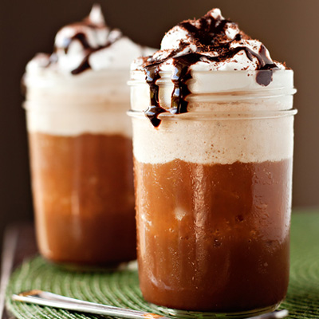

|
 How's Your Brew? |
   

Dark Mocha Frappucino |
|
How to Make Your Own Frappe?With five minutes and seven ingredients, you can blend your own. If you’ve got some coffee left over from breakfast, save it to make sweet, refreshing frappes later on. Yours just might be as good as that ubiquitous Seattle-based coffee chain’s. Read More... |
||


Bacon Cheese Fries |
||
Cheesy? |
How to Make Bacon Cheese Fries?French fries are delightful and make an ideal accompaniment to many a meal in need of a potato pick-me-up. Whatever your preference, there is a style of making French fries just for you. Making homemade french fries is easier than you think! Here are two no-fail ways to make crispy homemade fries. Once you know how to make french fries, a quick side dish is just minutes away. |
|

Craving for pasta? |
||
|
Carbonara is certainly just as quick and easy to prepare, requiring nothing more than tossing al dente spaghetti and a little of its starchy cooking water with eggs, grated Parmesan or some other tasty cured-pork product. But what occurs when those elements combine qualifies, in my mind, as a kind of alchemy. Calling for just a few basic ingredients you’re likely to have on hand, spaghetti carbonara can be summoned spontaneously any night of the week. If you don’t have guanciale or pancetta, use bacon—a non-traditional substitute, to be sure, but there’s a lot to be said for adding a hint of smoky flavor. Served with a salad, carbonara makes a welcome Sunday supper, weeknight meal or romantic dinner for two. |
||